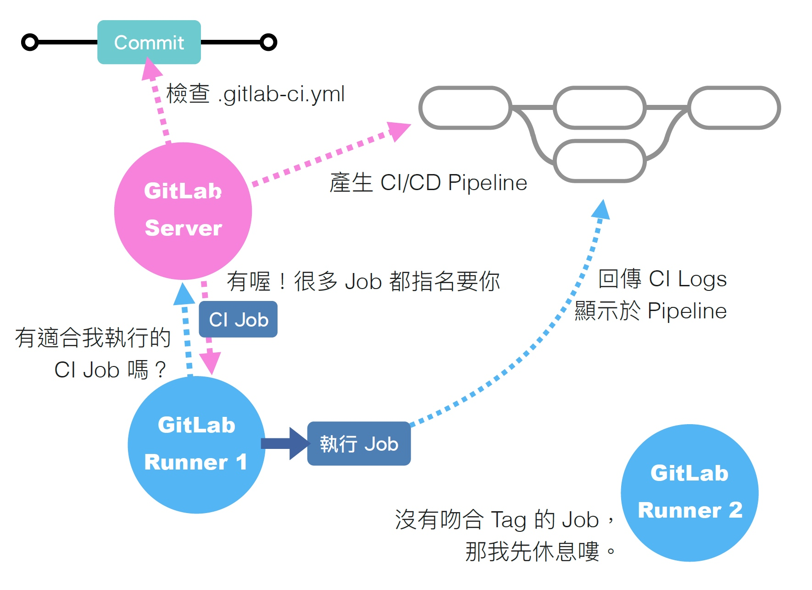
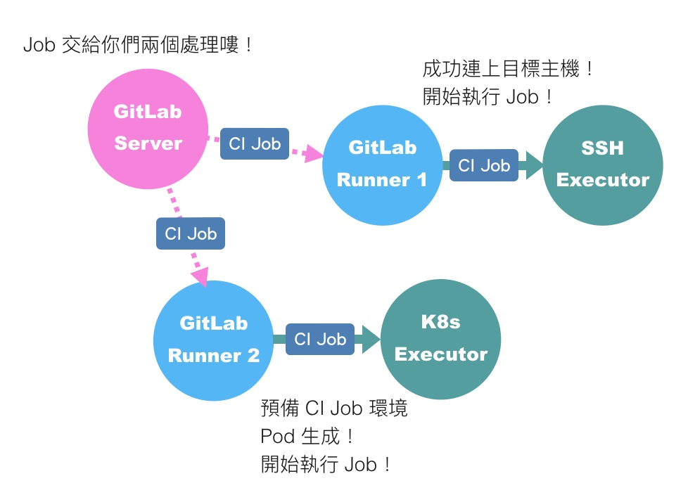
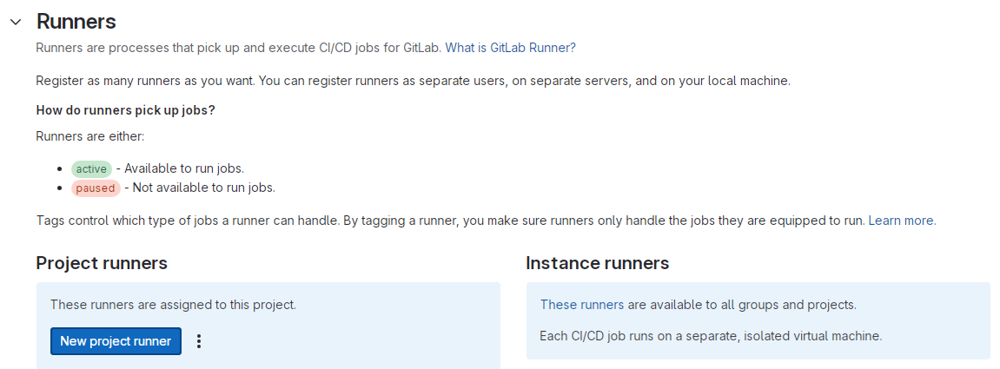
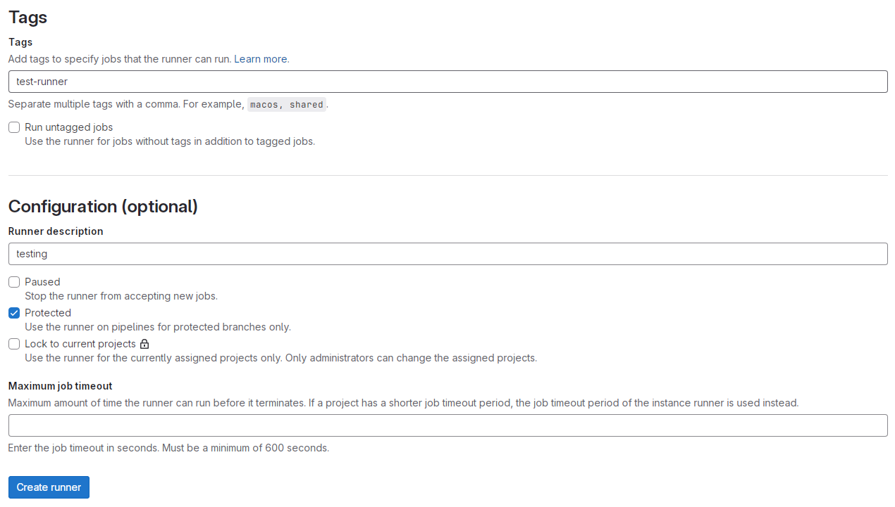
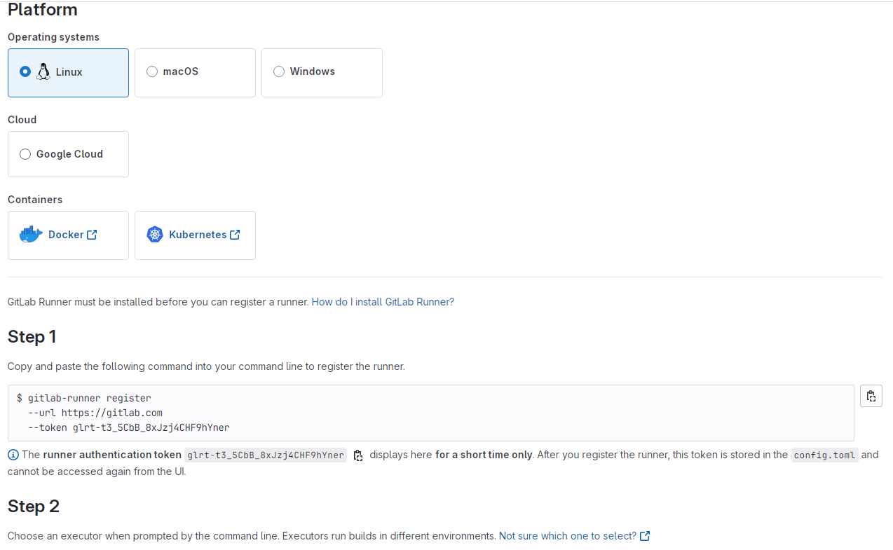

解放工程師的雙手，你需要好的 CI/CD ─ 搞定 gitlab-runner + executor
身為一位忙碌的工程師，右手握滑鼠，左手衛生紙，左手按鍵盤，根本不想額外花心力在手動部署上，這時候你需要的就是一套完整的 CI/CD。
CI/CD 的概念應該不用多做解釋，但在開始這一切之前，有人還不了解 gitlab CI 運作機制的嗎？我先在這邊附上艦長大大製的圖，非常淺顯易懂：

簡單說，當你跟 Gitlab 做出互動，例如: 下 tag 或是 push commit，Gitlab 會自動觸發你專案中的 .gitlab-ci.yml。
接著 Gitlab 會需要找一台 server 來執行.gitlab-ci.yml裡面的指令(Jobs)，這個執行的 server 就叫做 gitlab-runner。
最後 Gitlab 會將 gitlab-runner 的執行過程跟執行結果顯示於 Pipeline 給你看。
講完了理論，就讓我們開始動手實作吧~
1. Install gitlab-runner
首先，先進入你的部署機器內的 terminal，這一步驟主要是將 runner 安裝在機器上，這樣之後跑 CI 就會在這台機器上跑。
以下會以 download binary file 來示範，或是你也可以直接apt install:
https://docs.gitlab.com/runner/install/linux-repository.html?tab=Debian%2FUbuntu%2FMint#install-gitlab-runner
# Linux x86-64
sudo curl -L --output /usr/local/bin/gitlab-runner "https://s3.dualstack.us-east-1.amazonaws.com/gitlab-runner-downloads/latest/binaries/gitlab-runner-linux-amd64"
如果你在內網需要透過 proxy 才能導向外部網站:
# Linux x86-64
sudo curl -L --output /usr/local/bin/gitlab-runner --proxy "http://your.proxy.ip:port" "https://s3.dualstack.us-east-1.amazonaws.com/gitlab-runner-downloads/latest/binaries/gitlab-runner-linux-amd64"
接著你需要給這個下載的 binary file 可執行的權限:
sudo chmod +x /usr/local/bin/gitlab-runner
再來你需要新增一個名為 gitlab-runner 的使用者
sudo useradd --comment 'GitLab Runner' --create-home gitlab-runner --shell /bin/bash
這時候你也可以順便給他 sudo 免輸密碼的權限，這樣之後跑 CI 會方便一些:
指令可參考這裡。
最後就是安裝並啟動 gitlab-runner 了:
sudo gitlab-runner install --user=gitlab-runner --working-directory=/home/gitlab-runner
sudo gitlab-runner start
在機器上安裝 gitlab-runner 後，接著就是想辦法跟你的 Gitlab repo 連動了~
Register gitlab-runner
這個步驟的目的是要將 gitlab-runner 與你的專案建立關聯，並且指定 executer。
好啦！又一個新名詞，究竟什麼是 executer 呢？
容許我再度引用艦長大大的圖:

我認為可以把 executer 簡單想成執行環境，當一個 CI job 被指派到 gitlab-runner，我們可以選擇對應的執行環境來執行它。
最直觀的方式是 Shell，亦即直接在該 runner server 上執行 CI Job。
最常用的是 Docker，指的是在 runner 上開一個 container 並在 container 內執行 CI。
當然也有其他方式供選擇，比如圖中的 SSH，可讓你連線至其他主機再執行 CI。
剩餘其他選項可參考官方文件。
言歸正傳，這個階段目的是要註冊 runner 到對應的 Gitlab repo，因此請先打開 Gitlab 到 /Settings/CI/CD/Runners 並點擊 "New Project Runner":

接著設定內容:

- Tags: 作為 CI Job 指定 Runner 的標籤使用，可以自由取名，也可設定成多個，中間以逗號分隔。
- Run untagged jobs: 有些沒有指定 tag 的 job 會分派到任意 runner 執行，你要不要開放這個 runner 可以執行那些沒有 tag 的 jobs。
- Protected: 只能執行 protected branch 上面的 CI job (預設只有 Master branch 是 protected)。
- Lock to current projects: 只能執行當前專案的 CI job。
再來進行註冊:

選擇系統後，Step1 會有一連串的輸入，參數包含以下幾項:
sudo gitlab-runner register \
--non-interactive \
--url "https://gitlab.com/" \
--token "$RUNNER_TOKEN" \
--executor "docker" \
--docker-image alpine:latest \
--description "docker-runner"
url: 預設是
https://gitlab.com/，如果公司自架 Gitlab 的話請輸入http://gitlab.${domain}.com/。token: 此為 runner authentication token，因為是私密資訊所以只會出現在此頁，之後將無法查看 (別擔心，這個範例 Runner 後來被我刪除了)。
注意：Gitlab v15 以前是使用 registration token，registration token 將在 Gitlab v18 以後被棄用，詳情請見 這裡。executor: 呈上所述，因為我的專案已經有
docker-compose所以我這邊直接選擇 Shell，如果選擇 docker 請記得給一個預設的 docker-image。
其他選項為 optional，可跳過。輸入之後你可以:
gitlab-runner run
成功就代表你完成註冊 gitlab-runner 了 🎉！當然，別忘了打開/etc/gitlab-runner/config.toml看看上面這些參數是否設定正確喔~
這些設定如果日後想更改也可以直接改 config.toml，不需要重新註冊。
補充一個我在公司內網踩過的坑：使用 docker executor 的時候，若有將
etc/hosts設定傳入 container 的需求，可以在/etc/gitlab-runner/config.toml內加上extra_hosts = ["example.com:x.x.x.x"]，通常公司有自架 DNS server 的時候會遇到。
結語
這個時候你的 gitlab-runner 已經準備就緒，接著就可以來正式撰寫.gitlab-ci.yml了，我們下次見 👋！
關於如何撰寫 CI 可參考：
References
GitLab CI 之 Runner 的 Executor 該如何選擇？
如何從頭打造專屬的 GitLab CI/CD
Install GitLab Runner manually on GNU/Linux